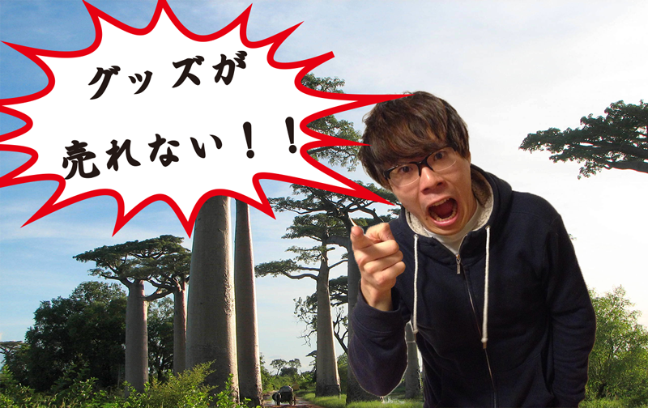
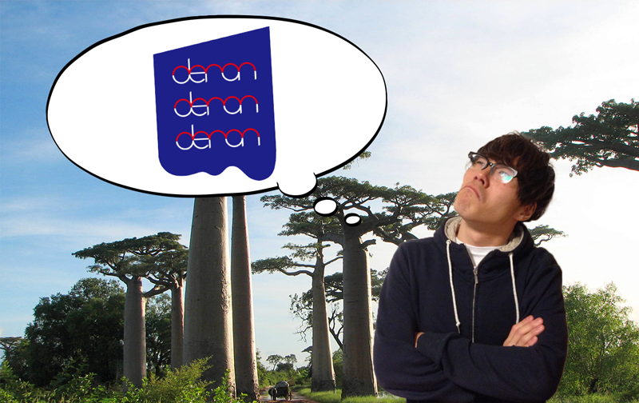
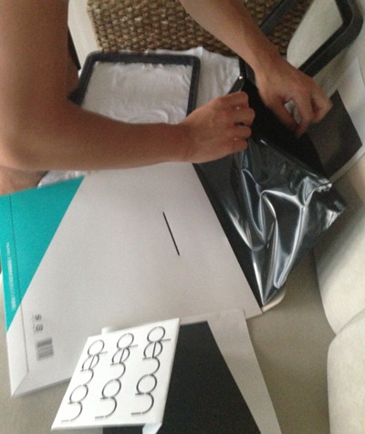
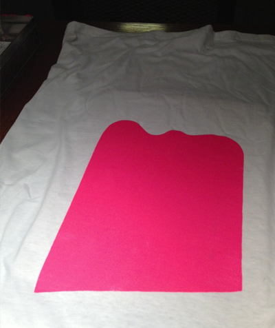
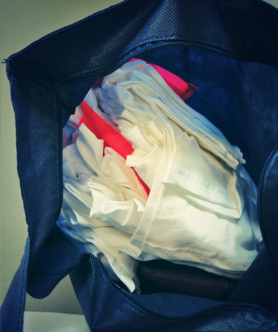
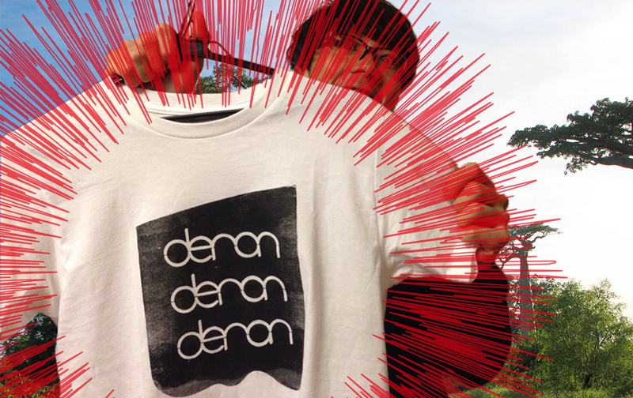
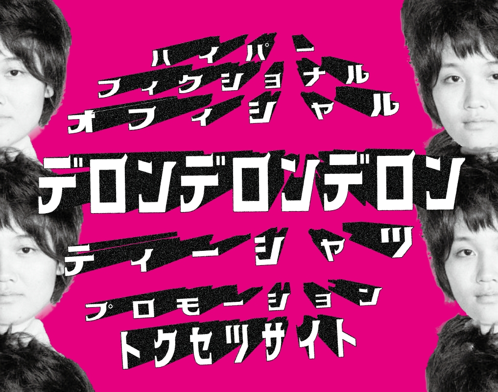

マダガスカルよりこんにちは。
deronderonderonの澤井です。
今回は皆さんに一言言いたくて、
わざわざ実家マダガスカルからお送りしています。
最近横浜下北沢界隈で
「フロントマンが超☆カッコいい！！！」
「ボーカルがイケメン！！！」
「澤井抱いて！！！！」
と評判になりつつあるderonderonderonですが、

そう、
物販が売れないんです。
CDはチョコチョコ売れるのですが、僕たちが用意している
素敵なTシャツ
が売れないんですよ。

Tシャツには
わざわざ
プロのデザイナーさん
がデザインしてくれた
あのカッコいいロゴ
を贅沢にあしらっているのに・・・。
どのくらいカッコいいかって言うと
すでに着てるくらいカッコいい！！！
真面目な話をいたしますと、
僕たちはTシャツを業者に発注はせず、一枚一枚、全て心を込めて手刷りしています。
もちろん、手作りより業者の方が質は高いでしょうし、安心感は間違いなくあるでしょう。
私どもも迷いました。
が、そのシーズンやイベントごとで色を変えたり、要望によってデザインを少し変えたりと、駆け出しの今だからこそできる、お客様、リスナー様により近い制作を心がけ、一枚一枚手刷りという道を選びました。
  
しかしながら、
売れない。
こんなにも私たちが想いを込めているというのに、
売 れ な い 。
なので私たちはこの度販促のため、
ハイパー
フィクショナル
オフィシャル
デロンデロンデロン
ティーシャツ
プロモーション
トクセツ サイト
を開設いたします。
これ見たら必ず買えやぁあぁぁああああああ！！！！！

(ホントお願いします)
↓特設サイトはこちらから↓ 